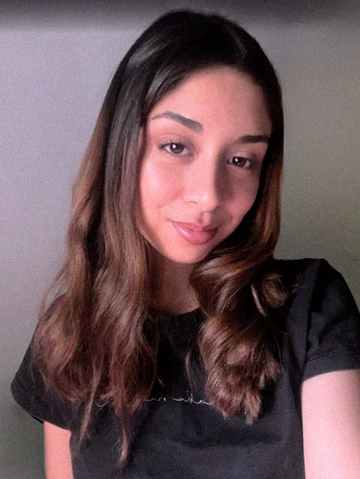

SOBRE MÍ
Actualmente me encuentro cursando la Licenciatura en Diseño y Comunicación Visual en la Universidad Nacional de Lanús. A lo largo de mi formación académica he desarrollado proyectos vinculados principalmente al diseño editorial, la identidad visual, la tipografía y la comunicación gráfica. Cuento con un emprendimiento personal de papelería, donde aplico mis conocimientos de diseño en la creación y producción de diferentes productos gráficos. Esta experiencia me permitió desarrollar habilidades relacionadas no solo con el diseño, sino también con la organización, la planificación y la gestión de un proyecto propio.
FORMACIÓN ACADÉMICA
- Licenciatura en Diseño y Comunicación Visual / UNLa (2024 - En curso)
- Bachiller de Economía y Administración / NCG (2018 - 2023)
SOFTWARE
- Adobe Illustrator / Avanzado
- Adobe Photoshop / Intermedio
- Adobe InDesign / Intermedio
- Microsoft Office / Avanzado
EXPERIENCIA
Emprendimiento de papelería / Proyecto independiente (2025- Actualidad)
- Diseño y desarrollo de productos de papelería.
- Creación de piezas gráficas y material para redes sociales.
- Organización y gestión de pedidos.
- Atención y comunicación con clientes.